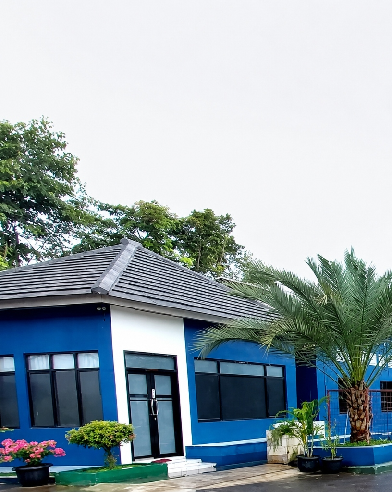

Mengenal Sekolah Tinggi Agama Islam Hamalatul Qur'an
Sekolah Tinggi Agama Islam Hamalatul Qur'an (STAIHA) hadir sebagai Perguruan Tinggi Agama Islam yang berkomitmen mencetak generasi mahasiswa unggul, berakhlak mulia, dan berwawasan luas.

Perguruan Tinggi TerbaikKarawang
Membangun Fondasi Pendidikan Berkualitas Tinggi
Sekolah Tinggi Agama Islam Hamalatul Qur'an (STAIHA) adalah perguruan tinggi terkemuka yang memadukan keilmuan Al-Qur'an, Studi Islam, dan Teknologi Informasi. Kami berkomitmen untuk menyediakan pendidikan yang inovatif, relevan, dan berorientasi pada kebutuhan global.
Dengan dukungan dosen-dosen berpengalaman, laboratorium modern, dan kemitraan dengan berbagai institusi terkemuka, STAIHA memastikan setiap lulusan siap berkompetisi di era digital.
Menjadi Perguruan Tinggi Agama Islam terkemuka yang menghasilkan lulusan unggul, berkarakter Qur'ani, dan mampu bersaing di era global dengan landasan nilai-nilai kebangsaan.
Menyelenggarakan pendidikan tinggi berkualitas dan relevan
Mengembangkan penelitian inovatif berbasis keilmuan Islam dan sains
Melaksanakan pengabdian masyarakat yang bermanfaat
Membangun kemitraan strategis nasional dan internasional
Sekolah Tinggi Agama Islam Hamalatul Qur'an sukses menggelar upacara wisuda angkatan ke-18 dengan jumlah wisudawan terbanyak sepanjang sejarah kampus...


 Akademik
Akademik